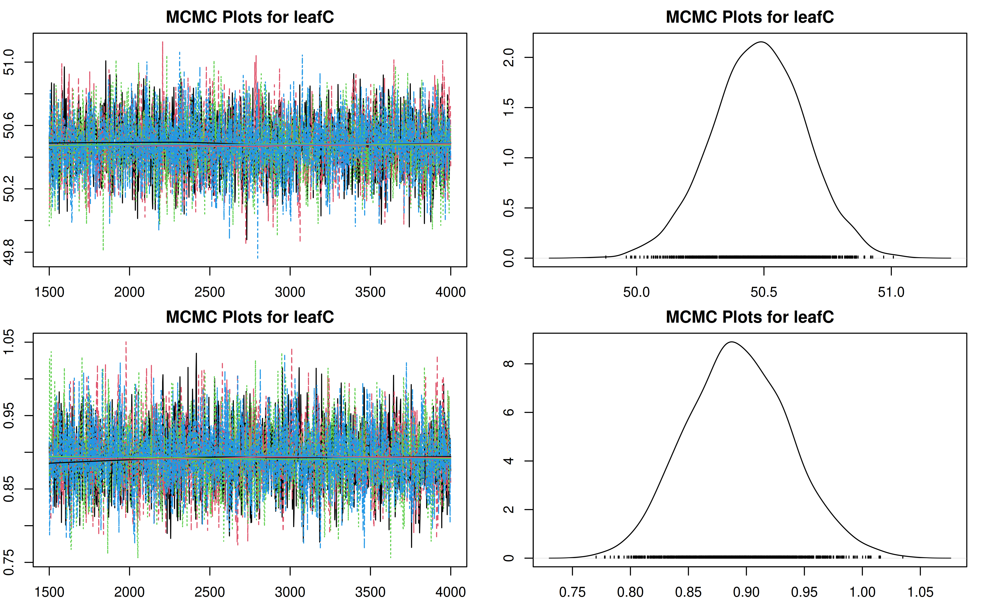
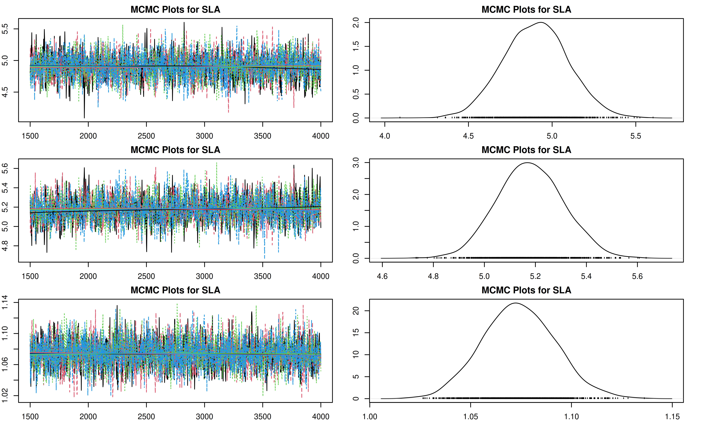
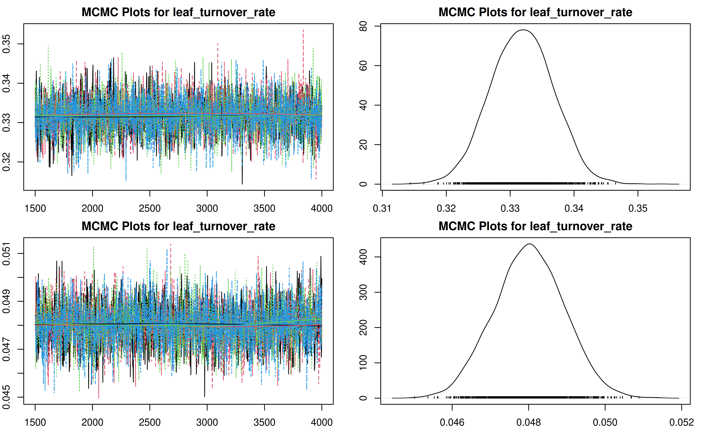
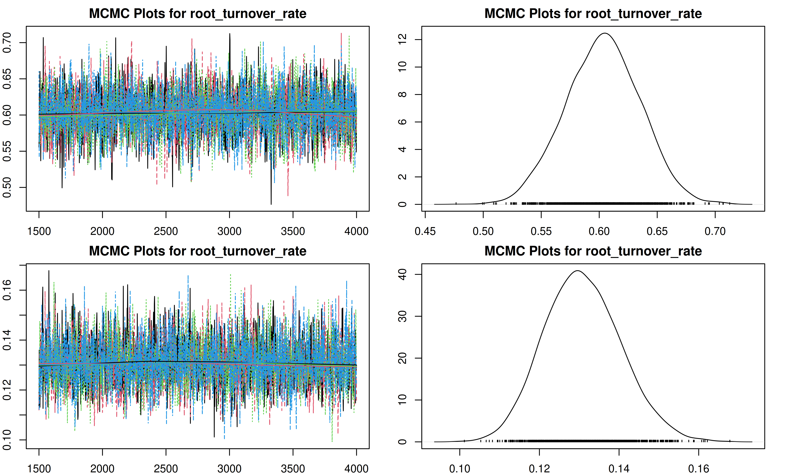
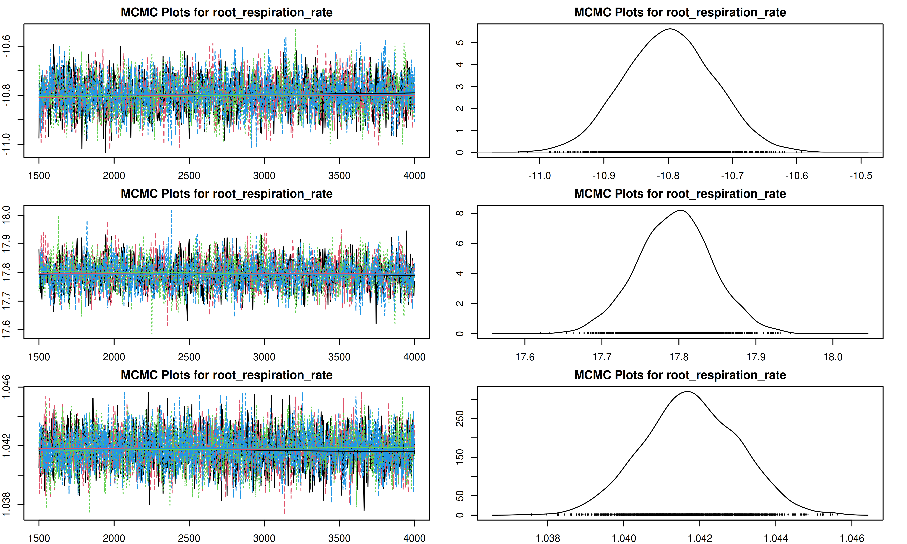

# Load necessary PEcAn packages
# library("PEcAn.all") # Alternatively, load all packages if installed
library("PEcAn.settings")
library("PEcAn.MA")
library("PEcAn.utils")
library("PEcAn.logger")Demo 03: Meta Analysis
1 Introduction
Meta-analysis in PEcAn is a hierarchical Bayesian statistical approach that synthesizes plant trait data from literature to constrain ecosystem model parameters. The PEcAn.MA module implements this functionality to combine prior information with observational data, generating posterior distributions for model parameters.
The PEcAn Meta-Analysis module runs on tabular data in a specific format. In a standard PEcAn workflow, this data is often obtained by querying the BETYdb database. However, you can also generate this format manually if you have other trait data (e.g., from the TRY database). For this demonstration, we will use pre-generated data files (originally from BETYdb) to simulate the workflow without requiring an active database connection during the notebook execution.
1.1 What This Notebook Does
This notebook demonstrates how to:
- Load pre-generated trait data and priors.
- Configure meta-analysis settings directly in R.
- Run the
meta_analysis_standalonefunction. - Analyze and visualize the posterior distributions and MCMC diagnostics.
- (Optional) Run meta-analysis using
pecan.xmlconfiguration (Workflow approach).
1.2 The Scenario
Context & modeling scenario:
This demo supports the modeling scenario introduced in Demo 01 and Demo 02, which simulated ecosystem carbon balance at the AmeriFlux Niwot Ridge Forest site (US‑NR1) using the SIPNET model.
While those demos focused on running the ecosystem model, this notebook zooms in on the Meta-Analysis step for the temperate coniferous Plant Functional Type (PFT). The goal is to estimate the probability distributions for key model parameters (e.g., SLA, leaf turnover rate) by combining:
- Priors: Existing knowledge about the parameters.
- Data: Observed trait data from the BETYdb database (pre-generated for this demo).
These informative posterior distributions can then be used to constrain the parameters of the SIPNET model (or other models) to improve prediction accuracy.
2 Prerequisites
Before running this notebook, make sure you have:
- PEcAn packages installed:
- For this demo: You only need a subset of PEcAn packages to run the meta-analysis.
# Enable repository from pecanproject
options(repos = c(
pecanproject = 'https://pecanproject.r-universe.dev',
CRAN = 'https://cloud.r-project.org'))
# Install core packages for meta-analysis
install.packages(c('PEcAn.MA', 'PEcAn.settings', 'PEcAn.utils', 'PEcAn.logger'))- Pre-generated Data: This demo relies on
trait.data.Rdataandprior.distns.Rdatafiles which are included in thepft/temperate.coniferousdirectory.
3 Load PEcAn Packages
First, we need to load the PEcAn R packages. These packages provide all the functions we’ll use to run the workflow.
4 Load Data and Configuration
Instead of using a pecan.xml file, we will define the configuration directly in R and load the necessary data files.
4.1 Load Data
We need to load the trait.data (observations) and prior.distns (priors) for our PFT.
# Define the path to the PFT directory containing the data
pft_dir <- here::here("documentation/tutorials/Demo_03_Meta_Analysis/pft/temperate.coniferous")
# Load trait data
load(file.path(pft_dir, "trait.data.Rdata"))
# This loads an object named 'trait.data'
# Load priors
load(file.path(pft_dir, "prior.distns.Rdata"))
# This loads an object named 'prior.distns'
# Check what we loaded
print(names(trait.data))[1] "Amax" "leafC"
[3] "SLA" "leaf_turnover_rate"
[5] "leaf_respiration_rate_m2" "root_turnover_rate"
[7] "root_respiration_rate" print(head(prior.distns)) distn parama paramb n
growth_resp_factor beta 2.63 6.52 0
leaf_turnover_rate weibull 1.37 1.43 363
root_respiration_rate unif 0.00 100.00 NA
root_turnover_rate unif 0.00 10.00 NA
Amax unif 0.00 40.00 NA
leaf_respiration_rate_m2 weibull 2.00 6.00 NA4.2 Configure Meta Analysis
We can define the settings for the meta-analysis as an R list. This structure mirrors the meta.analysis section of a pecan.xml file, making it easy to translate between the two.
You can modify these settings to change the number of MCMC iterations, whether to include random effects, and the convergence threshold.
Key settings include:
- iter: MCMC (Markov Chain Monte Carlo) chain length, i.e. the total number of posterior samples in the meta-analysis, default is 3000. Smaller numbers will run faster but produce larger errors.
- random.effects: Settings related to whether to include random effects (site, treatment) in meta-analysis model.
- on: Default is set to
FALSEto work around convergence problems caused by an over parameterized model (e.g. too many sites, not enough data). Can be turned toTRUEfor including hierarchical random effects. - use_ghs: Default is set to
TRUEto include greenhouse measurements. Can be set toFALSEto exclude cases where all data is from greenhouse.
- on: Default is set to
- threshold: threshold for Gelman-Rubin convergence diagnostic (MGPRF); default is 1.2.
# Define configuration as a list
ma_settings <- list(
iter = 3000,
random.effects = list(
on = FALSE,
use_ghs = TRUE
),
threshold = 1.2
)5 Run Meta Analysis (Standalone)
We use the meta_analysis_standalone function to run the analysis. We pass the values from our ma_settings list to the function arguments.
# Run standalone meta-analysis
ma_results <- PEcAn.MA::meta_analysis_standalone(
trait_data = trait.data,
priors = prior.distns,
iterations = ma_settings$iter,
random = ma_settings$random.effects$on,
use_ghs = ma_settings$random.effects$use_ghs,
threshold = ma_settings$threshold,
pft_name = "temperate.coniferous",
outdir = pft_dir
)Each meta-analysis will be run with:
3000 total iterations,
4 chains,
a burnin of 1500 samples,
,
thus the total number of samples will be 6000
################################################
------------------------------------------------
starting meta-analysis for:
Amax
------------------------------------------------
prior for Amax
(using R parameterization):
unif(0, 40)
data max: 25.69
data min: 1.7845
mean: 10.3
n: 28
stem plot of data points
The decimal point is at the |
0 | 88
2 | 37
4 | 0
6 | 523466
8 | 1235556
10 | 0
12 | 55
14 | 0
16 | 6
18 | 3939
20 |
22 |
24 | 7
stem plot of obs.prec:
The decimal point is 2 digit(s) to the right of the |
0 | 0000000000125
2 |
4 |
6 | 5
Compiling model graph
Resolving undeclared variables
Allocating nodes
Graph information:
Observed stochastic nodes: 42
Unobserved stochastic nodes: 16
Total graph size: 118
Initializing model
Iterations = 1002:4000
Thinning interval = 2
Number of chains = 4
Sample size per chain = 1500
1. Empirical mean and standard deviation for each variable,
plus standard error of the mean:
Mean SD Naive SE Time-series SE
beta.o 16.838 0.17786 0.0022961 0.0024648
sd.y 3.843 0.04736 0.0006114 0.0006498
2. Quantiles for each variable:
2.5% 25% 50% 75% 97.5%
beta.o 16.491 16.720 16.840 16.958 17.185
sd.y 3.752 3.811 3.842 3.875 3.936
################################################
------------------------------------------------
starting meta-analysis for:
leafC
------------------------------------------------
prior for leafC
(using R parameterization):
norm(50.6, 1.32)
data max: 53.7
data min: 47.7
mean: 50.5
n: 12
stem plot of data points
The decimal point is at the |
46 | 7
48 | 349
50 | 55691
52 | 387
stem plot of obs.prec:
The decimal point is 3 digit(s) to the right of the |
0 | 00000000002
0 |
1 |
1 |
2 |
2 | 5
Compiling model graph
Resolving undeclared variables
Allocating nodes
Graph information:
Observed stochastic nodes: 24
Unobserved stochastic nodes: 2
Total graph size: 49
Initializing model
Iterations = 1002:4000
Thinning interval = 2
Number of chains = 4
Sample size per chain = 1500
1. Empirical mean and standard deviation for each variable,
plus standard error of the mean:
Mean SD Naive SE Time-series SE
beta.o 50.4789 0.18167 0.0023453 0.0024102
sd.y 0.8932 0.04439 0.0005731 0.0006147
2. Quantiles for each variable:
2.5% 25% 50% 75% 97.5%
beta.o 50.1207 50.3574 50.480 50.602 50.8393
sd.y 0.8096 0.8628 0.892 0.923 0.9835
################################################
------------------------------------------------
starting meta-analysis for:
SLA
------------------------------------------------
prior for SLA
(using R parameterization):
lnorm(1.89, 0.61)
data max: 17.7
data min: 2.73
mean: 7.41
n: 47
stem plot of data points
The decimal point is at the |
2 | 78023345555559
4 | 015991789
6 | 77889134
8 | 0673
10 | 07
12 | 67748
14 | 344
16 | 87
stem plot of obs.prec:
The decimal point is 3 digit(s) to the right of the |
0 | 0000000000000000000002224
1 | 12
2 |
3 |
4 |
5 |
6 |
7 |
8 | 6
Compiling model graph
Resolving undeclared variables
Allocating nodes
Graph information:
Observed stochastic nodes: 75
Unobserved stochastic nodes: 22
Total graph size: 220
Initializing model
Iterations = 1002:4000
Thinning interval = 2
Number of chains = 4
Sample size per chain = 1500
1. Empirical mean and standard deviation for each variable,
plus standard error of the mean:
Mean SD Naive SE Time-series SE
beta.ghs[2] 4.902 0.19502 0.002518 0.0032047
beta.o 5.181 0.13054 0.001685 0.0023896
sd.y 1.074 0.01812 0.000234 0.0002411
2. Quantiles for each variable:
2.5% 25% 50% 75% 97.5%
beta.ghs[2] 4.525 4.771 4.903 5.032 5.287
beta.o 4.932 5.093 5.178 5.268 5.435
sd.y 1.039 1.062 1.074 1.086 1.111
################################################
------------------------------------------------
starting meta-analysis for:
leaf_turnover_rate
------------------------------------------------
prior for leaf_turnover_rate
(using R parameterization):
weibull(1.37, 1.43)
data max: 0.769
data min: 0.12625
mean: 0.392
n: 15
stem plot of data points
The decimal point is 1 digit(s) to the left of the |
0 | 3
2 | 3777928
4 | 12569
6 | 37
stem plot of obs.prec:
The decimal point is 9 digit(s) to the right of the |
0 | 00000000000
0 |
1 |
1 |
2 | 0
Compiling model graph
Resolving undeclared variables
Allocating nodes
Graph information:
Observed stochastic nodes: 27
Unobserved stochastic nodes: 5
Total graph size: 80
Initializing model
Iterations = 1002:4000
Thinning interval = 2
Number of chains = 4
Sample size per chain = 1500
1. Empirical mean and standard deviation for each variable,
plus standard error of the mean:
Mean SD Naive SE Time-series SE
beta.o 0.33187 0.0049093 6.338e-05 6.670e-05
sd.y 0.04802 0.0009105 1.175e-05 1.391e-05
2. Quantiles for each variable:
2.5% 25% 50% 75% 97.5%
beta.o 0.32228 0.32853 0.33188 0.33519 0.34136
sd.y 0.04626 0.04742 0.04803 0.04865 0.04978
################################################
------------------------------------------------
starting meta-analysis for:
leaf_respiration_rate_m2
------------------------------------------------
prior for leaf_respiration_rate_m2
(using R parameterization):
weibull(2, 6)
data max: 1.8
data min: 0.583410488985368
mean: 1.13
n: 10
stem plot of data points
The decimal point is at the |
0 | 679
1 | 00134
1 | 58
stem plot of obs.prec:
The decimal point is 3 digit(s) to the right of the |
0 | 000012
0 |
1 |
1 |
2 |
2 | 55
Compiling model graph
Resolving undeclared variables
Allocating nodes
Graph information:
Observed stochastic nodes: 18
Unobserved stochastic nodes: 4
Total graph size: 58
Initializing model
Iterations = 1002:4000
Thinning interval = 2
Number of chains = 4
Sample size per chain = 1500
1. Empirical mean and standard deviation for each variable,
plus standard error of the mean:
Mean SD Naive SE Time-series SE
beta.o 1.410 0.02528 0.0003264 0.0003482
sd.y 0.333 0.01082 0.0001397 0.0001500
2. Quantiles for each variable:
2.5% 25% 50% 75% 97.5%
beta.o 1.3603 1.3925 1.4099 1.4269 1.460
sd.y 0.3123 0.3256 0.3327 0.3403 0.355
################################################
------------------------------------------------
starting meta-analysis for:
root_turnover_rate
------------------------------------------------
prior for root_turnover_rate
(using R parameterization):
unif(0, 10)
data max: 0.98
data min: 0.42
mean: 0.597
n: 6
stem plot of data points
The decimal point is 1 digit(s) to the left of the |
4 | 2376
6 | 2
8 | 8
stem plot of obs.prec:
The decimal point is 4 digit(s) to the right of the |
2 |
3 | 00000
4 |
5 |
6 | 7
Compiling model graph
Resolving undeclared variables
Allocating nodes
Graph information:
Observed stochastic nodes: 12
Unobserved stochastic nodes: 2
Total graph size: 35
Initializing model
Iterations = 1002:4000
Thinning interval = 2
Number of chains = 4
Sample size per chain = 1500
1. Empirical mean and standard deviation for each variable,
plus standard error of the mean:
Mean SD Naive SE Time-series SE
beta.o 0.6033 0.03222 0.0004160 0.0004345
sd.y 0.1308 0.00961 0.0001241 0.0001301
2. Quantiles for each variable:
2.5% 25% 50% 75% 97.5%
beta.o 0.540 0.5816 0.6038 0.6249 0.6666
sd.y 0.113 0.1241 0.1305 0.1370 0.1507
################################################
------------------------------------------------
starting meta-analysis for:
root_respiration_rate
------------------------------------------------
prior for root_respiration_rate
(using R parameterization):
unif(0, 100)
data max: 79.8
data min: 0.0967276868352595
mean: 10.6
n: 155
stem plot of data points
The decimal point is 1 digit(s) to the right of the |
0 | 000000000000111111111222222233333333333334444444444444444
0 | 55555555555555666666666666777777778888888899999999
1 | 000001111122223333444
1 | 55555667799
2 | 4
2 | 8
3 | 3
3 | 67
4 | 004
4 | 78
5 | 03
5 | 9
6 |
6 | 9
7 | 0
7 |
8 | 0
stem plot of obs.prec:
The decimal point is 7 digit(s) to the right of the |
0 | 00000000000000000000000000000000000000000000000000000000000000000000+22
2 |
4 |
6 | 0
8 |
10 |
12 |
14 |
16 |
18 |
20 |
22 |
24 |
26 |
28 |
30 |
32 | 1
Compiling model graph
Resolving undeclared variables
Allocating nodes
Graph information:
Observed stochastic nodes: 259
Unobserved stochastic nodes: 54
Total graph size: 669
Initializing model
Iterations = 1002:4000
Thinning interval = 2
Number of chains = 4
Sample size per chain = 1500
1. Empirical mean and standard deviation for each variable,
plus standard error of the mean:
Mean SD Naive SE Time-series SE
beta.ghs[2] -10.798 0.070486 9.100e-04 0.0012463
beta.o 17.794 0.049840 6.434e-04 0.0009578
sd.y 1.042 0.001265 1.634e-05 0.0000174
2. Quantiles for each variable:
2.5% 25% 50% 75% 97.5%
beta.ghs[2] -10.935 -10.846 -10.798 -10.751 -10.661
beta.o 17.695 17.762 17.795 17.827 17.892
sd.y 1.039 1.041 1.042 1.043 1.0446 PEcAn Outputs
The meta_analysis_standalone function returns a list containing:
trait.mcmc: The raw MCMC samples.post.distns: The fitted posterior distributions.jagged.data: The formatted data used in the analysis.
It also saves these results to the output directory (default is a temporary directory, or the one specified in outdir).
6.1 Output Directory Structure
The meta-analysis produces several output files in the PFT directory.
The pft directory contains all the outputs for the Plant Functional Types included in the analysis. Inside the specific PFT directory (e.g., temperate.coniferous), you will find:
- Data & Priors:
trait.data.Rdata: Contains the raw trait data points retrieved from the database.prior.distns.Rdata: Contains the prior probability distributions for the traits.jagged.data.Rdata: The trait data formatted for the JAGS model.
- Model Files:
*.model.bug(e.g.,SLA.model.bug): The BUGS/JAGS model code generated for each trait. This defines the statistical model used for the meta-analysis.
- Results:
trait.mcmc.Rdata: The raw MCMC (Markov Chain Monte Carlo) samples from the Bayesian analysis. This contains the full posterior chains.post.distns.Rdata: The posterior distributions fitted to the MCMC samples. These are the final parameters used by the ecosystem model.post.distns.MA.Rdata: A specific version of the posterior distributions generated by the meta-analysis module.
- Diagnostics & Plots:
ma.summaryplots.*.pdf(e.g.,ma.summaryplots.SLA.pdf): Diagnostic plots for each trait, including trace plots (to check convergence) and density plots (comparing prior, data, and posterior).posteriors.pdf: A summary PDF showing the posterior distributions for all traits.meta-analysis.log: A log file recording the details of the meta-analysis execution.
6.2 Posterior Distributions
We can inspect the post.distns element of the results to see the estimated parameters.
print(ma_results$post.distns) distn parama paramb n
growth_resp_factor beta 2.630000e+00 6.520000e+00 0
leaf_turnover_rate gamma 4.599094e+03 1.385906e+04 363
root_respiration_rate gamma 1.305319e+05 7.335304e+03 NA
root_turnover_rate norm 6.032464e-01 3.218022e-02 NA
Amax norm 1.683906e+01 1.773593e-01 NA
leaf_respiration_rate_m2 norm 1.409835e+00 2.521562e-02 NA
SLA gamma 1.571280e+03 3.033270e+02 455
leafC norm 5.047843e+01 1.820358e-01 291
Vm_low_temp norm 0.000000e+00 3.000000e+00 NA
AmaxFrac unif 6.000000e-01 9.000000e-01 NA
psnTOpt unif 5.000000e+00 4.000000e+01 NA
stem_respiration_rate unif 0.000000e+00 1.000000e+02 NA
extinction_coefficient unif 3.800000e-01 6.200000e-01 NA
half_saturation_PAR unif 4.000000e+00 2.700000e+01 NA
dVPDSlope unif 1.000000e-02 2.500000e-01 NA
dVpdExp unif 1.000000e+00 3.000000e+00 NA
veg_respiration_Q10 unif 1.400000e+00 2.600000e+00 NA
fine_root_respiration_Q10 unif 1.400000e+00 5.000000e+00 NA
coarse_root_respiration_Q10 unif 1.400000e+00 5.000000e+00 NA7 Visualize Meta Analysis Results
It is important to check the MCMC chains for convergence. We can visualize the trace plots and density plots for each trait using the trait.mcmc object from our results.
The plot function for MCMC objects typically produces two types of plots for each parameter:
- Trace Plot: Shows the value of the parameter at each iteration of the MCMC chain. We look for a “fuzzy caterpillar” shape, indicating good mixing and convergence. There should be no visible trend (drift) up or down.
- Density Plot: Shows the estimated posterior probability distribution of the parameter. This represents our updated belief about the parameter value after combining the prior with the data.
# Adjust plot margins to prevent clipping
par(mar = c(2, 2, 2, 2))
# Iterate through each trait and plot the MCMC chains
for (trait in names(ma_results$trait.mcmc)) {
print(paste("Plotting", trait))
plot(ma_results$trait.mcmc[[trait]], main = paste("MCMC Plots for", trait))
}[1] "Plotting Amax"
[1] "Plotting leafC"
[1] "Plotting SLA"
[1] "Plotting leaf_turnover_rate"
[1] "Plotting leaf_respiration_rate_m2"
[1] "Plotting root_turnover_rate"
[1] "Plotting root_respiration_rate"
8 Conclusion
In this demo, we have successfully run a Bayesian meta-analysis to estimate the posterior distributions of plant traits for a temperate coniferous forest.
8.1 Using these Posteriors
Now that you have generated these posterior distributions, you can use them to constrain the parameters of an ecosystem model. To do this:
- Locate your output: Note the path to the
post.distns.Rdatafile generated in thepft/temperate.coniferousdirectory. - Update your
pecan.xml: In your model run configuration (e.g., from Demo 01 or Demo 02), update the<posterior.files>tag within the<pft>section to point to this file.xml <pft> <name>temperate.coniferous</name> <posterior.files>/path/to/your/demo/pft/temperate.coniferous/post.distns.Rdata</posterior.files> </pft> - Rerun the model: Execute your PEcAn workflow (e.g., Demo 01 or Demo 02).
- Compare results: Observe how the width of the confidence intervals and the overall uncertainty analysis results change when using these informative priors compared to the default uninformative priors.
9 Alternative: Running as part of a Workflow (pecan.xml)
The standalone method shown above is great for quick analysis or debugging. However, when running the meta-analysis as part of a larger, automated PEcAn workflow (e.g., connecting to BETYdb, running ecosystem models), it is often more convenient to use the pecan.xml configuration file and the runModule.run.meta.analysis function.
This approach ensures that all settings are centralized and that outputs are automatically managed and registered in the workflow.
9.1 Load PEcAn Settings File
Use the XML settings file (pecan.xml) exactly as in the Demo 1 Basic Run tutorial.
settings_path <- here::here("documentation/tutorials/Demo_03_Meta_Analysis/pecan.xml")
# Read the settings from the pecan.xml file
settings <- PEcAn.settings::read.settings(settings_path)The meta.analysis section in pecan.xml controls the behavior:
<meta.analysis>
<iter>3000</iter>
<random.effects>
<on>FALSE</on>
<use_ghs>TRUE</use_ghs>
</random.effects>
<update>FALSE</update>
</meta.analysis>Key tags include:
- update: Should previous results of meta.analysis and get.traits be re-used. If set to
TRUEthe meta-analysis and get.trait.data will always be executed. Setting this toFALSEwill try and reuse existing results. Future versions will allow for AUTO as well which will try and reuse if the PFT/traits have not changed. The default value isFALSE.
9.2 Run Meta Analysis (Module)
The runModule.run.meta.analysis function handles the entire process: reading data from the PFT directory (which must be populated by get.trait.data in a full workflow), running the analysis, and saving results.
# Run meta-analysis using settings
PEcAn.MA::runModule.run.meta.analysis(settings)This will produce the same trait.mcmc.Rdata and post.distns.Rdata files in the output directory specified in the settings.
10 Further Exploration
The next set of tutorials will focus on the process of data assimilation and parameter estimation. The next two steps are in “.Rmd” files which can be viewed online.
Assimilation ‘by hand’
Explore how model error changes as a function of parameter value (i.e. data assimilation ‘by hand’)
MCMC Concepts Explore Bayesian MCMC concepts using the photosynthesis module
Parameter Data Assimilation (PDA)
Explore how to perform Parameter Data Assimilation (calibration) in PEcAn. While meta-analysis constrains parameters using literature data, PDA constrains parameters by comparing model output directly against field observations (e.g., flux tower data).
State Data Assimilation (SDA)
Explore how to perform State Data Assimilation. This tutorial demonstrates how to update the internal states of the model (such as carbon pools) using observations, for example, assimilating tree ring widths to constrain biomass trajectories.
More info about tools, analyses, and specific tasks…
Additional information about specific tasks (adding sites, models, data; software updates; etc.) and analyses (e.g. data assimilation) can be found in the PEcAn documentation
If you encounter a problem with PEcAn that’s not covered in the documentation, or if PEcAn is missing functionality you need, please search known bugs and issues, submit a bug report, or ask a question in our chat room.
11 Session Information
11.0.1 PEcAn package versions.
if (requireNamespace("PEcAn.all", quietly = TRUE)) {
PEcAn.all::pecan_version()
} else {
print("PEcAn.all not installed. See sessionInfo() below for package versions.")
} package v1.10.0 installed source
PEcAn.all 1.10.0 1.10.0 local (/pecan/bas...
PEcAn.allometry 1.7.5 1.7.5.9000 local (/pecan/mod...
PEcAn.assim.batch 1.9.1 1.9.1.9000 local (/pecan/mod...
PEcAn.BASGRA 1.8.2 1.8.2 local (/pecan/mod...
PEcAn.benchmark 1.7.5 1.7.5 local (/pecan/mod...
PEcAn.BIOCRO 1.7.5 1.7.5.9000 local (/pecan/mod...
PEcAn.CABLE 1.7.5 NA NA
PEcAn.CLM45 1.7.5 1.7.5 local (/pecan/mod...
PEcAn.DALEC 1.7.5 1.7.5 local (/pecan/mod...
PEcAn.data.atmosphere 1.9.1 1.9.1.9000 local (/pecan/mod...
PEcAn.data.land 1.9.0 1.9.0.9000 local (/pecan/mod...
PEcAn.data.mining 1.7.5 NA NA
PEcAn.data.remote 1.9.1 1.9.1 local (/pecan/mod...
PEcAn.DB 1.8.2 1.8.2.9000 local (/pecan/bas...
PEcAn.dvmdostem 1.7.5 1.7.5 local (/pecan/mod...
PEcAn.ED2 1.8.2 1.8.2 local (/pecan/mod...
PEcAn.emulator 1.8.2 1.8.2 local (/pecan/mod...
PEcAn.FATES 1.8.1 1.8.1 local (/pecan/mod...
PEcAn.GDAY 1.7.5 1.7.5 local (/pecan/mod...
PEcAn.JULES 1.7.5 1.7.5 local (/pecan/mod...
PEcAn.LDNDC 1.0.2 1.0.2 local (/pecan/mod...
PEcAn.LINKAGES 1.7.5 1.7.5 local (/pecan/mod...
PEcAn.logger 1.8.4 1.8.4 local (/pecan/bas...
PEcAn.LPJGUESS 1.9.0 1.9.0 local (/pecan/mod...
PEcAn.MA 1.7.5 1.7.5.9000 local (/pecan/mod...
PEcAn.MAAT 1.7.5 1.7.5.9000 local (/pecan/mod...
PEcAn.MAESPA 1.7.5 1.7.5 local (/pecan/mod...
PEcAn.ModelName 0.0.1 0.0.1 local (/pecan/mod...
PEcAn.photosynthesis 1.7.5 1.7.5.9000 local (/pecan/mod...
PEcAn.PRELES 1.7.5 NA NA
PEcAn.priors 1.7.5 1.7.5.9000 local (/pecan/mod...
PEcAn.qaqc 1.7.5 1.7.5.9000 local (/pecan/bas...
PEcAn.remote 1.9.1 1.9.1 local (/pecan/bas...
PEcAn.RothC <NA> 0.0.0.9000 local (/pecan/mod...
PEcAn.settings 1.9.1 1.9.1.9000 local (/pecan/bas...
PEcAn.SIBCASA 0.0.3 0.0.3 local (/pecan/mod...
PEcAn.SIPNET 1.10.0 1.10.9000 local (/pecan/mod...
PEcAn.STICS 1.8.2 1.8.2 local (/pecan/mod...
PEcAn.uncertainty 1.9.0 1.9.0.9000 local (/pecan/mod...
PEcAn.utils 1.8.2 1.8.2.9000 local (/pecan/bas...
PEcAn.visualization 1.8.2 1.8.2.9000 local (/pecan/bas...
PEcAn.workflow 1.10.0 1.10.0 local (/pecan/bas...
PEcAnAssimSequential 1.10.0 1.10.0.9000 local (/pecan/mod...
PEcAnRTM 1.9.1 1.9.1.9000 local (/pecan/mod...11.0.2 R session information:
sessionInfo()R version 4.4.3 (2025-02-28)
Platform: x86_64-pc-linux-gnu
Running under: Ubuntu 24.04.3 LTS
Matrix products: default
BLAS: /usr/lib/x86_64-linux-gnu/openblas-pthread/libblas.so.3
LAPACK: /usr/lib/x86_64-linux-gnu/openblas-pthread/libopenblasp-r0.3.26.so; LAPACK version 3.12.0
locale:
[1] LC_CTYPE=en_US.UTF-8 LC_NUMERIC=C
[3] LC_TIME=en_US.UTF-8 LC_COLLATE=en_US.UTF-8
[5] LC_MONETARY=en_US.UTF-8 LC_MESSAGES=en_US.UTF-8
[7] LC_PAPER=en_US.UTF-8 LC_NAME=C
[9] LC_ADDRESS=C LC_TELEPHONE=C
[11] LC_MEASUREMENT=en_US.UTF-8 LC_IDENTIFICATION=C
time zone: Etc/UTC
tzcode source: system (glibc)
attached base packages:
[1] stats graphics grDevices utils datasets methods base
other attached packages:
[1] PEcAn.logger_1.8.4 PEcAn.utils_1.8.2.9000
[3] PEcAn.MA_1.7.5.9000 PEcAn.settings_1.9.1.9000
loaded via a namespace (and not attached):
[1] PEcAn.qaqc_1.7.5.9000 DBI_1.2.3
[3] PEcAn.allometry_1.7.5.9000 rlang_1.1.5
[5] magrittr_2.0.3 PEcAn.data.land_1.9.0.9000
[7] furrr_0.3.1 PEcAn.uncertainty_1.9.0.9000
[9] e1071_1.7-16 compiler_4.4.3
[11] vctrs_0.6.5 stringr_1.5.1
[13] pkgconfig_2.0.3 PEcAn.MAESPA_1.7.5
[15] fastmap_1.2.0 PEcAn.ED2_1.8.2
[17] PEcAn.dvmdostem_1.7.5 PEcAn.ModelName_0.0.1
[19] rmarkdown_2.29 pracma_2.4.4
[21] sessioninfo_1.2.3 purrr_1.0.4
[23] xfun_0.52 PEcAn.JULES_1.7.5
[25] jsonlite_2.0.0 PEcAn.LINKAGES_1.7.5
[27] PEcAn.SIBCASA_0.0.3 parallel_4.4.3
[29] R6_2.6.1 PEcAn.DALEC_1.7.5
[31] stringi_1.8.7 PEcAn.workflow_1.10.0
[33] PEcAn.CLM45_1.7.5 parallelly_1.43.0
[35] rjags_4-17 numDeriv_2016.8-1.1
[37] lubridate_1.9.4 Rcpp_1.0.14
[39] iterators_1.0.14 knitr_1.50
[41] PEcAnAssimSequential_1.10.0.9000 igraph_2.1.4
[43] timechange_0.3.0 tidyselect_1.2.1
[45] PEcAn.remote_1.9.1 yaml_2.3.10
[47] PEcAn.LPJGUESS_1.9.0 codetools_0.2-20
[49] PEcAn.data.atmosphere_1.9.1.9000 listenv_0.9.1
[51] PEcAn.emulator_1.8.2 lattice_0.22-6
[53] tibble_3.2.1 coda_0.19-4.1
[55] evaluate_1.0.3 future_1.34.0
[57] sf_1.0-20 units_0.8-7
[59] proxy_0.4-27 PEcAn.DB_1.8.2.9000
[61] PEcAn.BASGRA_1.8.2 pillar_1.10.2
[63] PEcAn.BIOCRO_1.7.5.9000 KernSmooth_2.23-26
[65] foreach_1.5.2 PEcAn.RothC_0.0.0.9000
[67] ncdf4_1.24 generics_0.1.3
[69] nimble_1.3.0 rprojroot_2.0.4
[71] PEcAn.assim.batch_1.9.1.9000 ggplot2_3.5.2
[73] munsell_0.5.1 scales_1.3.0
[75] PEcAn.all_1.10.0 globals_0.16.3
[77] PEcAn.MAAT_1.7.5.9000 PEcAn.STICS_1.8.2
[79] class_7.3-23 glue_1.8.0
[81] tools_4.4.3 PEcAn.data.remote_1.9.1
[83] data.table_1.17.0 PEcAn.priors_1.7.5.9000
[85] XML_3.99-0.18 grid_4.4.3
[87] PEcAn.visualization_1.8.2.9000 PEcAn.photosynthesis_1.7.5.9000
[89] PEcAn.SIPNET_1.10.9000 colorspace_2.1-1
[91] cli_3.6.4 PEcAnRTM_1.9.1.9000
[93] dplyr_1.1.4 PEcAn.GDAY_1.7.5
[95] gtable_0.3.6 PEcAn.FATES_1.8.1
[97] digest_0.6.37 classInt_0.4-11
[99] PEcAn.LDNDC_1.0.2 rjson_0.2.23
[101] htmlwidgets_1.6.4 PEcAn.benchmark_1.7.5
[103] htmltools_0.5.8.1 lifecycle_1.0.4
[105] here_1.0.1 MASS_7.3-64